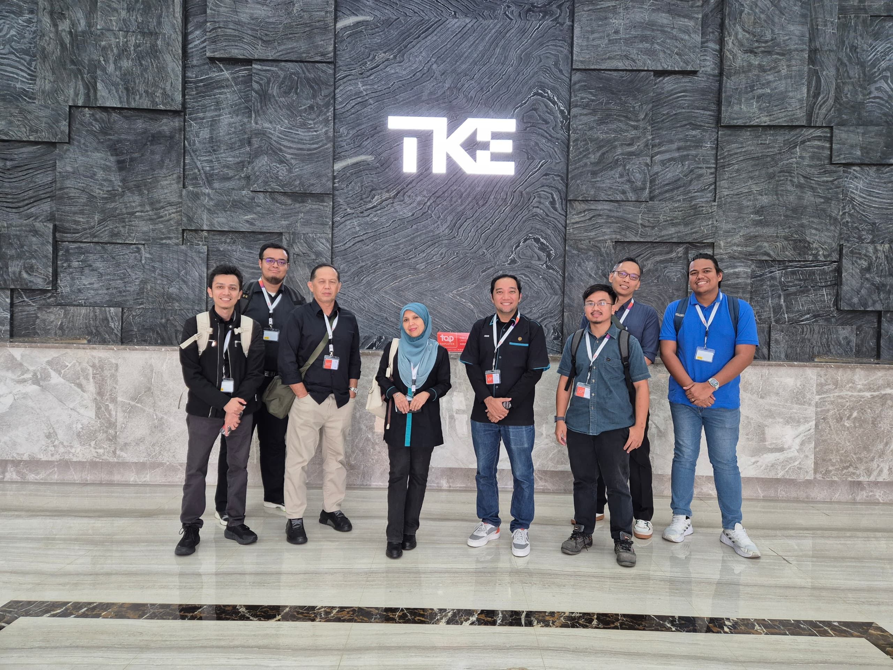
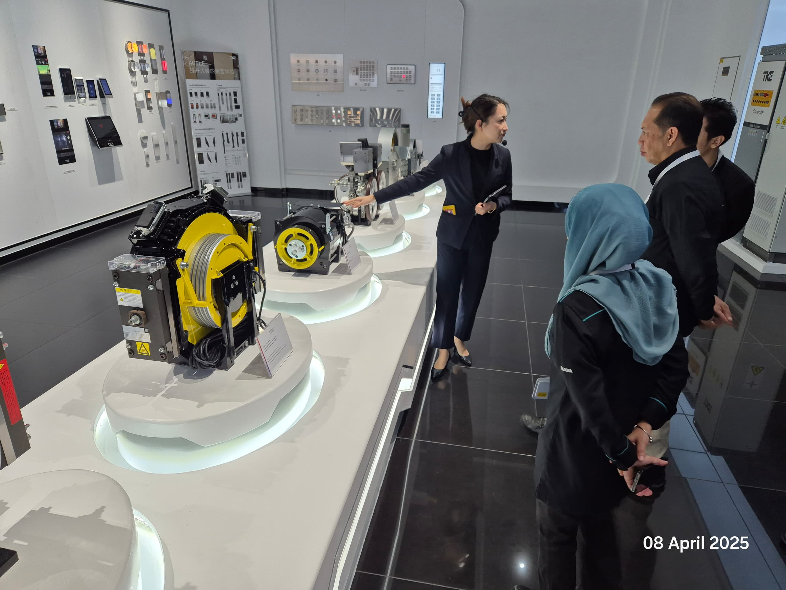
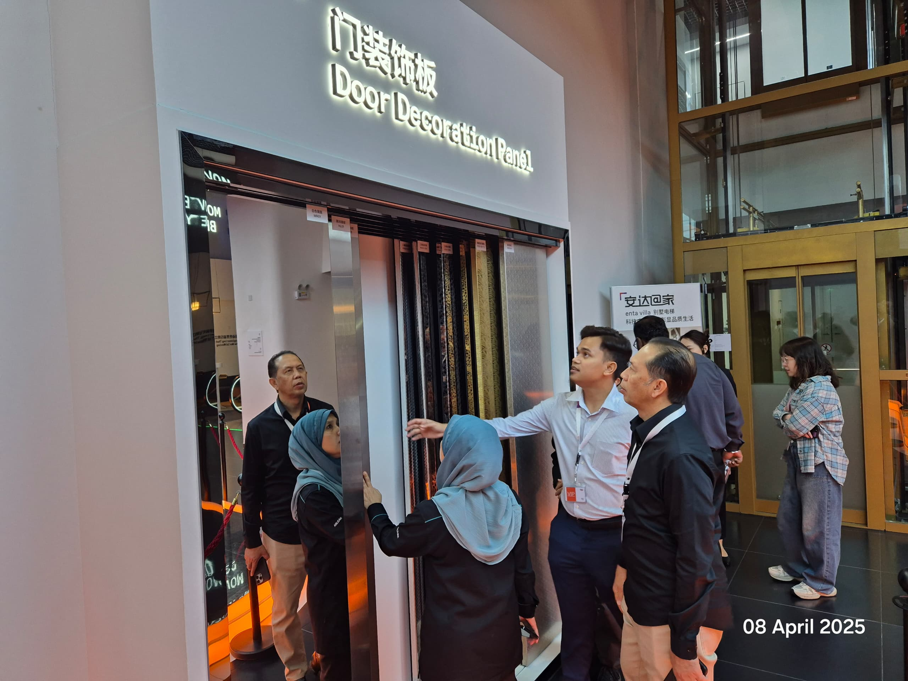
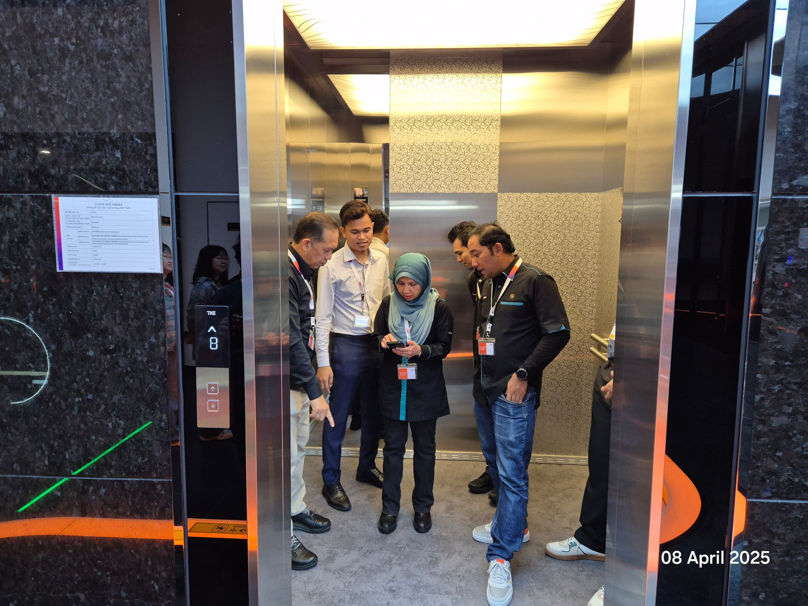
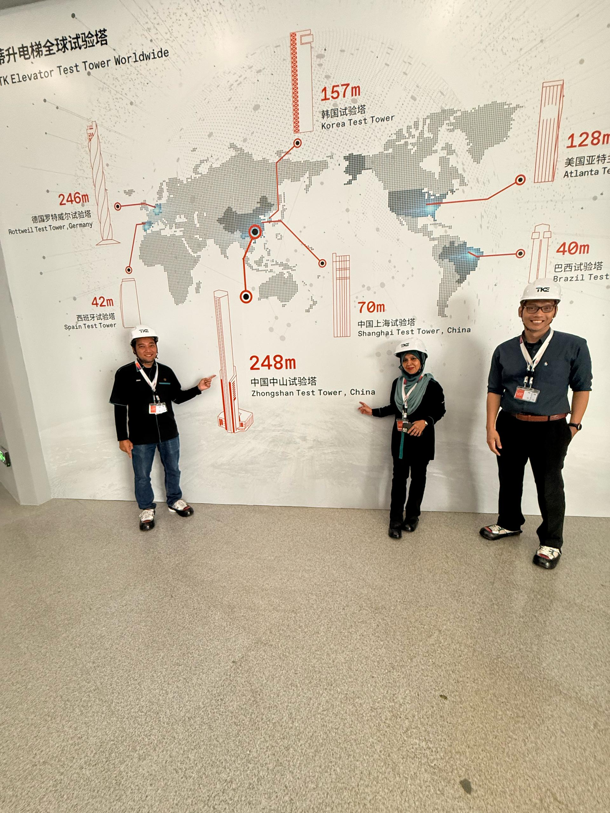

In early April 2025 I had the privilege of visiting TK Elevator (TKE) in Zhongshan, China. I expected a polite factory tour. What I got was a masterclass in how the humble lift — something we step into without a second thought — is engineered, decorated, and tested at the very edge of physics.

If the name feels familiar, that's because TKE used to be part of a German industrial legend. The parent group, thyssenkrupp, was itself born in 1999 from the merger of two old steel houses — Thyssen and Krupp — with roots in German heavy industry stretching back to the 1800s.
In 2020, the sprawling thyssenkrupp conglomerate (steel, materials, submarines, automotive components …) sold off its entire elevator division to a consortium led by the private-equity firms Advent International and Cinven, together with Germany's RAG Foundation — a deal worth a staggering €17.2 billion.
That carved-out business became an independent company and, in February 2021, took on a new identity: TK Elevator, with the global brand TKE. So thyssenkrupp remains the industrials parent; TKE is the spun-off vertical-transport specialist. In terms of products, TKE makes both elevators and escalators, plus moving walkways and accessibility solutions. Today it sits among the world's largest players in the field, alongside Kone, Schindler and Otis.
The short version: ThyssenKrupp (the steel-and-industrials giant) sold its elevator arm in 2020. That arm became the independent TK Elevator — TKE — which builds lifts and escalators.
The visit began in a showroom that felt less like a factory floor and more like a design gallery. Components that normally live hidden in a shaft were here lifted onto illuminated white plinths, lit like museum pieces.

That yellow machine is the heart of the lift. A modern gearless traction motor uses a permanent-magnet synchronous design coupled directly to a sheave (a grooved pulley). The hoisting ropes wrap over the sheave, the cabin hangs on one side and a counterweight on the other, and the motor simply decides which way the balance tips. No gearbox, less friction, less heat, quieter rides, and far better energy efficiency than the old geared machines — the same “fewer moving parts, longer life” logic I love in any good piece of engineering.
The next stop surprised me the most. An entire wall was given over to door decoration panels — finishes for the lift doors and walls that you browse and pull out exactly like fabric swatches at a curtain shop.

It made a simple point obvious: a lift is not one product. It is a platform that gets tailored to its building. Which is exactly what the cabin samples showed next.

There were multiple cabins on display, each pitched at a different world: an opulent gold-and-marble cabin for a luxury hotel lobby, clean and durable finishes for an office tower, and hard-wearing, easy-to-clean interiors designed for the heavy traffic of a hospital. Same engineering underneath; completely different skin on top.
Then came the part I had really come to see. To prove their lifts at full speed and full height, TKE doesn't borrow someone else's building — they built their own skyscraper just to test inside.

The Zhongshan test tower stands 248 metres tall — about 31 storeys — and opened in 2018 as the centrepiece of the new plant. It is purpose-built to push hardware past what any normal building would ever demand of it. Inside its 13 shafts, engineers trial high-speed lifts running at up to 18 metres per second (roughly 65 km/h, straight up), and even MULTI — the world's first rope-free lift system, which uses linear motors to move cabins not just up and down but sideways too, like a vertical railway.
What I found genuinely clever is the Active Mass Damper (AMD) near the top. A tower this slender naturally sways in the wind, which would ruin precision testing — so a large mass is driven by computer to push back against the sway and hold the tower steady. The same system can be run in reverse to deliberately shake the tower, mimicking the motion of earthquakes and typhoons so that lifts can be tested against the worst nature can offer. (If you'd like to see how the tower looks from outside, there's a good shot in this LinkedIn post.)
We treat lifts as invisible infrastructure — we press a button and trust the box. This visit was a reminder of the enormous, careful engineering hiding behind that trust: the gearless motors, the swatch-by-swatch customisation, the cabins tuned to their buildings, and a quarter-kilometre tower built for the sole purpose of making sure the ride is safe and smooth. As someone who has tinkered with my own lift & escalator simulator, walking through the real thing at this scale was a genuine thrill.
The best engineering is the kind you never notice — because someone, somewhere, tested it inside a 248-metre tower first. TKE ZHONGSHAN · APRIL 2025